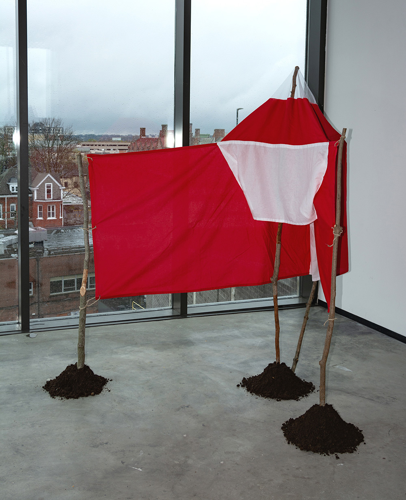
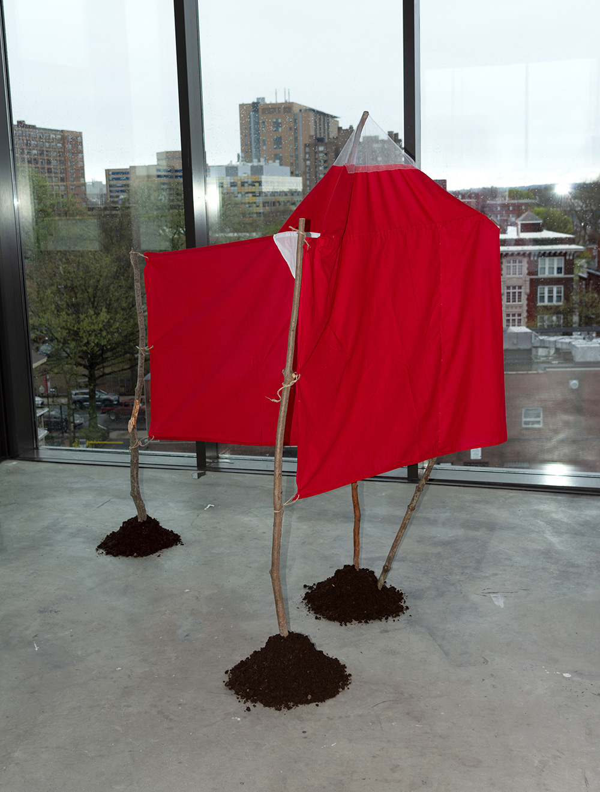
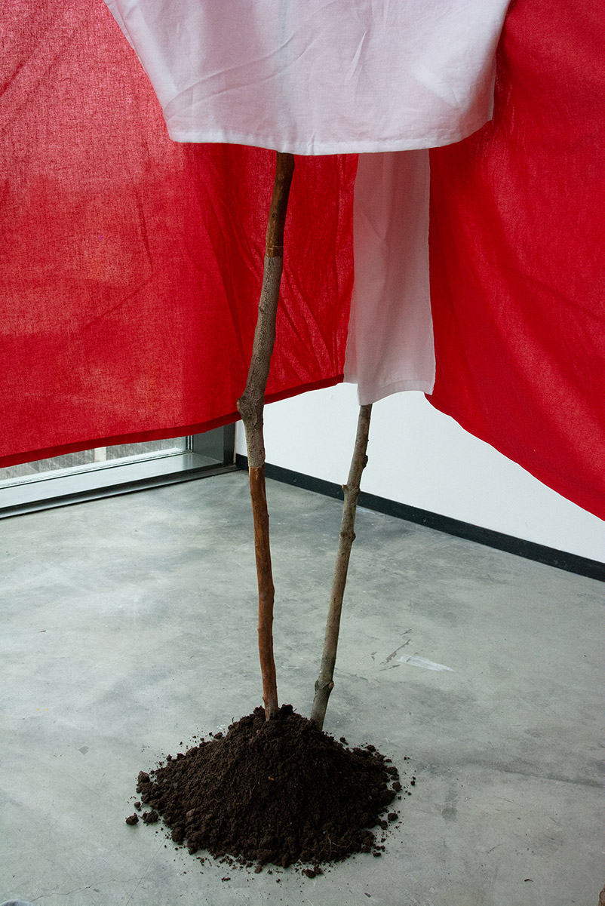
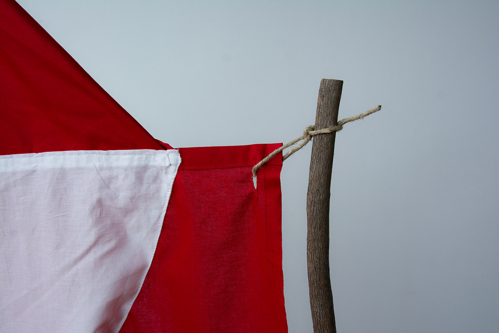
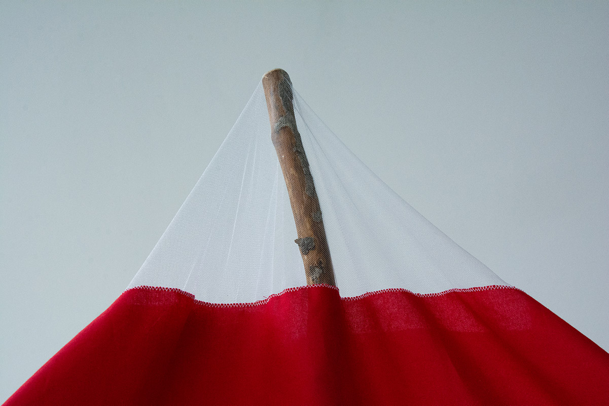
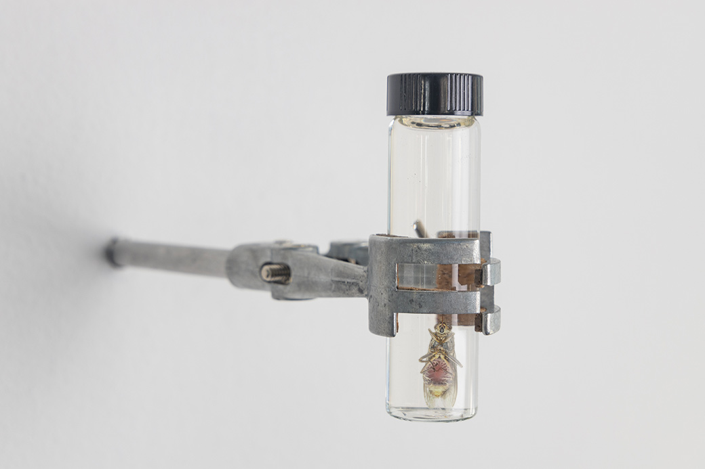
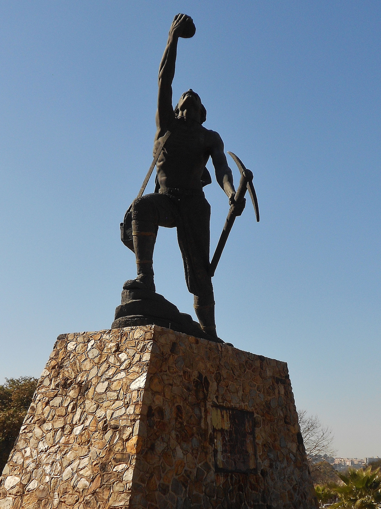

ngu trap, prototype
1-octen-3-ol, acetone, clay, concrete, cow urine from Indian Zebu, dirt, Indian silk, netting, staples, sticks, twine
dimensions vary
2019

entanglement catalysts, rendering detail
acetone, cow urine from Indian Zebu, metallic utility clamp, tsetse fly, vial
4” x 12”
2020, work in progress
 latin square
latin square
archival ink-jet print, digital collage
24” x 24”
2020

prospector (George Harrison) source photo of George Harrison monument in Johannesburg’s Settler’s Park, taken by Darly Nakuna
collected 2020